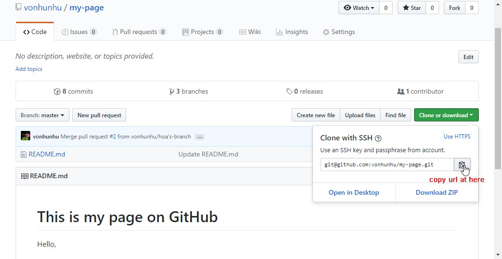

Overview¶
-
GitHub is a code hosting platform for version control and collaboration. It lets you and others work together on projects from anywhere.
-
GitHub essentials like repositories, branches, commits, and Pull Requests.
-
Pull Requests are the heart of collaboration on GitHub. When you open a pull request, you’re proposing your changes and requesting that someone review and pull in your contribution and merge them into their branch.
-
These are 2 types:
- Github Global https://github.com
- Github Enterprise e.g https://github.dev.cybozu.co.jp
A. Installation¶
-
Install github Based on your OS (Windows, Mac OS, Linux/Unix), let download the suitable archive
-
Create a GitHub account ->Send request to IT support to create the new account if you're using Github Enterprise ->For personal account, you can create by yourself
B. Operation with GibHub in Basic¶
Taget: get the latest version on local UsingTerminal in Mac or Command Prompt or Powershell in Windows.
1. Initializing a Repository on local¶
$ cd e:/project/github-project
$ git init
Initialized empty Git repository in E:/project/github-project/.git/
- Result: creates a new subdirectory named .git that contains all of your necessary repository files
2. Cloning an Existing Repository¶
- Clones=copy a repository into a newly created directory, creates remote-tracking branches for each branch in the cloned repository, run by command git clone <url>
- <url> get from git server

$ cd e:/project/github-project
$ git clone git@github.com:vonhunhu/github-project.git
- Result: the new source has your local.
3. git checkout¶
-
Switch branches or restore working tree files, run by command git checkout <branch-name>
$ cd e:/project/github-project $ git chechout github-project -
Result: get a staging of snapshop on the specify branch
4. git pull¶
-
Fetch and replay the changes from the remote, run by command git pull <branch-name>
$ cd e:/project/github-project/<branch-name> $ git chechout <branch-name> $ git pull <branch-name> -
Result: get a lasted version from github
5. git status¶
- To know the file status, by run the git status command
$ touch myfile.md $ git status On branch master No commits yet Untracked files: (use "git add <file>..." to include in what will be committed) myfile.md Nothing added to commit but untracked files present (use "git add" to track)
6. git add¶
$ git add .
7. git commit¶
git commit -m <your message>
$ git commit -m 'update github-guide'
7. git push¶
$ git push